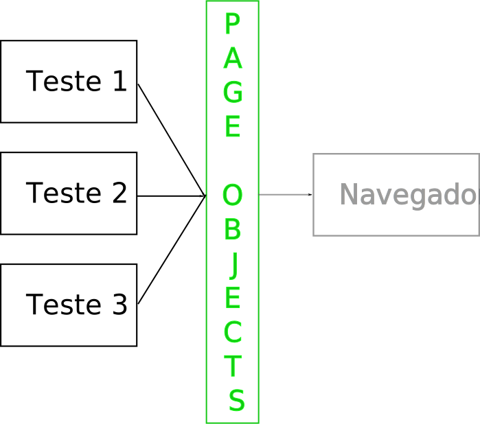

teste == documentação
public void testClass() {
Class cls = DateTimeUtils.class;
assertEquals(true, Modifier.isPublic(cls.getModifiers()));
assertEquals(false, Modifier.isFinal(cls.getModifiers()));
assertEquals(1, cls.getDeclaredConstructors().length);
assertEquals(true, Modifier.isProtected(
cls.getDeclaredConstructors()[0].getModifiers()));
DateTimeUtils utils = new DateTimeUtils() {};
}
Meh...
Sim, e esse é um bom exemplo!
Se você concorda...
Testes legíveis, projetos felizes
Luiz Fernando Oliveira Corte Real
@srsaude
github.com/luiz
About
Mestre em Ciência da Computação
Desenvolvedor e instrutor na Caelum
About Caelum
Pra quê testes?
Por vários motivos!
Fim?
Ah, é...
public void testClass() {
Class cls = DateTimeUtils.class;
assertEquals(true, Modifier.isPublic(cls.getModifiers()));
assertEquals(false, Modifier.isFinal(cls.getModifiers()));
assertEquals(1, cls.getDeclaredConstructors().length);
assertEquals(true, Modifier.isProtected(
cls.getDeclaredConstructors()[0].getModifiers()));
DateTimeUtils utils = new DateTimeUtils() {};
}
Sobre o que é isso?
Vossa mensagem apeteceu-me de tal forma que demonstrarei publicamente meu regozijo apertando o botão de meu dispositivo de apontamento sobre esta região do documento.
Curtir
Mas o que é conciso?
Aqui ok!
Vossa mensagem apeteceu-me de tal forma que demonstrarei publicamente meu regozijo apertando o botão de meu dispositivo de apontamento sobre esta região do documento.
versusCurtir
Mas e aqui?
assertEquals(true, Modifier.isPublic(cls.getModifiers()));
assertEquals(false, Modifier.isFinal(cls.getModifiers()));
assertThat(cls, both(isPublic(), not(isFinal())));
E aqui?
testClass
versusclassIsPublicNotFinalWithOneProtectedConstructor
E aqui? É conciso?
public void canProvideCustomRequestScopedComponents() {
checkAvailabilityFor(false,
Arrays.<Class<?>>asList(MyRequestComponent.class));
}
Conciso = curto, mas suficiente para passar informação
Conciso = ?
(subjetivo)
Mas...
Orientação a objetos
- Divisão de responsabilidades
- Baixo acoplamento
- Coesão
⇒ código mais fácil de manter
(mais legível)
Tell, don't ask
public void testClass() {
Class cls = DateTimeUtils.class;
assertEquals(true, Modifier.isPublic(cls.getModifiers()));
assertEquals(false, Modifier.isFinal(cls.getModifiers()));
assertEquals(1, cls.getDeclaredConstructors().length);
assertEquals(true, Modifier.isProtected(
cls.getDeclaredConstructors()[0].getModifiers()));
DateTimeUtils utils = new DateTimeUtils() {};
}
Telling
public void testClass() {
Class cls = DateTimeUtils.class;
assertTrue(isPublic(cls));
assertFalse(isFinal(cls)));
assertTrue(hasOnlyConstructors(cls, protectedConstructor));
DateTimeUtils utils = new DateTimeUtils() {};
}
Doing
private boolean isPublic(Class cls) {
return Modifier.isPublic(cls.getModifiers());
}
private boolean isFinal(Class cls) {
return Modifier.isFinal(cls.getModifiers());
}
private boolean hasOnlyConstructors(Class cls,
MyConstructorDescriptionClass... constructors) {
if (constructors.length != cls.length) {
return false;
}
// código meio feio aqui
}
Menos ruído
public void testClass() {
Class cls = DateTimeUtils.class;
assertTrue(isPublic(cls));
assertFalse(isFinal(cls)));
assertTrue(hasOnlyConstructors(cls, protectedConstructor));
DateTimeUtils utils = new DateTimeUtils() {};
}
= mais legibilidade
Dá pra melhorar?
public void testClass() {
Class cls = DateTimeUtils.class;
assertTrue(isPublic(cls));
assertFalse(isFinal(cls)));
assertTrue(hasOnlyConstructors(cls, protectedConstructor));
DateTimeUtils utils = new DateTimeUtils() {};
}
Dá!
Boa prática: nomes claros
public void classIsPublicNotFinalWithOneProtectedConstructor() {
Class cls = DateTimeUtils.class;
assertTrue(isPublic(cls));
assertFalse(isFinal(cls)));
assertTrue(hasOnlyConstructors(cls, protectedConstructor));
DateTimeUtils utils = new DateTimeUtils() {};
}
Melhor ainda!
Má prática: não seguir a convenção da linguagem
Boa prática: quebrar as regras quando isso te ajudar
public void class_is_public_not_final_with_one_protected_constructor() {
Class cls = DateTimeUtils.class;
assertTrue(isPublic(cls));
assertFalse(isFinal(cls)));
assertTrue(hasOnlyConstructors(cls, protectedConstructor));
DateTimeUtils utils = new DateTimeUtils() {};
}
Outro exemplo!
it "should update timestamp if last updated more than one day ago" do
@job.attributes = valid_job_attributes
@job.updated_at = 2.days.ago
Job.record_timestamps = false
@job.save
Job.record_timestamps = true
updated_at = @job.updated_at
@job.update_attributes :title => 'teste'
@job.updated_at.should_not eql(updated_at)
@job.title.should eql('teste')
end
Melhor?
it "should update timestamp if last updated more than one day ago" do
two_days_ago = 2.days.ago
@job.attributes = valid_job_attributes
@job.updated_at = two_days_ago
@job.save_without_timestamps
@job.update_attributes :title => 'teste'
@job.updated_at.should_not eql(two_days_ago)
@job.title.should eql('teste')
end
Espaços? Onde?
- Contexto (Given)
- Ação (When)
- Resultados (Then)
Given/When/Then
it "should update timestamp if last updated more than one day ago" do
two_days_ago = 2.days.ago
@job.attributes = valid_job_attributes
@job.updated_at = two_days_ago
@job.save_without_timestamps
@job.update_attributes :title => 'teste'
@job.updated_at.should_not eql(two_days_ago)
@job.title.should eql('teste')
end
Testes de aceitação
(dor)
Por que!?
public void mostraTarefasDoUsuario() {
Tarefa atrasada = ... // cria a tarefa
Tarefa hoje = ... // cria a tarefa
Tarefa amanha = ... // cria a tarefa
Page currentPage = browser.currentPage();
assertTrue(currentPage.div("tarefa_atrasada_" + atrasada.getId())
.exists());
assertTrue(currentPage.div("tarefa_hoje_" + hoje.getId())
.exists());
assertTrue(currentPage.div("tarefa_prox_" + amanha.getId())
.exists());
}
Hmm... ok! :)
Por que!?!?
public void someComTarefaJaPronta() {
Tarefa atrasada = ... // cria a tarefa
Tarefa hoje = ... // cria a tarefa
Tarefa amanha = ... // cria a tarefa
Page currentPage = browser.currentPage();
currentPage.click("feita_" + amanha.getId());
currentPage.navigate("jqibuttonSim");
assertTrue(currentPage.div("tarefa_atrasada_" + atrasada.getId())
.exists());
assertTrue(currentPage.div("tarefa_hoje_" + hoje.getId())
.exists());
assertFalse(currentPage.div("tarefa_prox_" + amanha.getId())
.exists());
}
Fácil!
Refatorei o JavaScript da página!o colega de trabalho que você quer matar agora
Por que!?!?!?
public void mostraTarefasDoUsuario() {
Tarefa atrasada = ... // cria a tarefa
Tarefa hoje = ... // cria a tarefa
Tarefa amanha = ... // cria a tarefa
Page currentPage = browser.currentPage();
assertTrue(currentPage.div("tarefa_atrasada_" + atrasada.getId())
.exists());
assertTrue(currentPage.div("tarefa_hoje_" + hoje.getId())
.exists());
assertTrue(currentPage.div("tarefa_prox_" + amanha.getId())
.exists());
}
Por que!?!?!?!?
public void someComTarefaJaPronta() {
Tarefa atrasada = ... // cria a tarefa
Tarefa hoje = ... // cria a tarefa
Tarefa amanha = ... // cria a tarefa
Page currentPage = browser.currentPage();
currentPage.click("feita_" + amanha.getId());
currentPage.navigate("jqibuttonSim");
assertTrue(currentPage.div("tarefa_atrasada_" + atrasada.getId())
.exists());
assertTrue(currentPage.div("tarefa_hoje_" + hoje.getId())
.exists());
assertFalse(currentPage.div("tarefa_prox_" + amanha.getId())
.exists());
}
Código repetido!
De volta à orientação a objetos...
Copiou, colou? Isolou!
public void mostraTarefasDoUsuario() {
Tarefa atrasada = ... // cria a tarefa
Tarefa hoje = ... // cria a tarefa
Tarefa amanha = ... // cria a tarefa
PaginaDeTarefas tarefas = new PaginaDeTarefas(browser);
assertTrue(tarefas.mostrouTarefaAtrasada(atrasada));
assertTrue(tarefas.mostrouTarefaHoje(hoje));
assertTrue(tarefas.mostrouProximaTarefa(amanha));
}
De volta à orientação a objetos...
Copiou, colou? Isolou!
public class PaginaDeTarefas {
// construtor
public boolean mostrouTarefaAtrasada(Tarefa atrasada) {
return currentPage.div("tarefa_atrasada_" + atrasada.getId())
.exists();
}
public boolean mostrouTarefaHoje(Tarefa hoje) {
return currentPage.div("tarefa_hoje_" + hoje.getId())
.exists();
}
public boolean mostrouProximaTarefa(Tarefa amanha) {
return currentPage.div("tarefa_prox_" + amanha.getId())
.exists();
}
}
Page Objects
Cria a tarefa...
public void mostraTarefasDoUsuario() {
Tarefa atrasada = ... // cria a tarefa
Tarefa hoje = ... // cria a tarefa
Tarefa amanha = ... // cria a tarefa
PaginaDeTarefas tarefas = new PaginaDeTarefas(browser);
assertTrue(tarefas.mostrouTarefaAtrasada(atrasada));
assertTrue(tarefas.mostrouTarefaHoje(hoje));
assertTrue(tarefas.mostrouProximaTarefa(amanha));
}
Assim!
public void mostraTarefasDoUsuario() {
Calendar ontem = Calendar.getInstance();
ontem.roll(Calendar.DAY, -1);
Calendar hoje = Calendar.getInstance();
Calendar amanha = Calendar.getInstance();
amanha.roll(Calendar.DAY, 1);
Tarefa atrasada = new Tarefa(usuario, ontem,
new Categoria(),
"Terminar palestra");
Tarefa hoje = new Tarefa(usuario, hoje,
new Categoria(),
"Apresentar palestra");
Tarefa amanha = new Tarefa(usuario, amanha,
new Categoria(),
"Descansar");
// ...
}
Hmmm... :/
Acho que já vi isso antes...
public void testeSemMocks() {
Produtos p = new Produtos(
new Item(new Categoria(), new Valor()),
new Item(new Categoria(), new Valor()));
// ...
}
criaItem!
public void testeSemMocks() {
Produtos p = new Produtos(criaItem(), criaItem());
// ...
}
private Item criaItem() {
return new Item(new Categoria(), new Valor());
}
Melhor ainda!
Builder
public void testeSemMocks() {
ItemBuilder itens = new ItemBuilder();
Produtos p = new Produtos(itens.cria(), itens.cria());
// ...
}
Melhor ainda!!
+ DSL
public void testeSemMocks() {
Builder builder = new Builder();
Produtos p = new Produtos(builder.umItem().comValor(15.00).cria(),
builder.umItem().comValor(15.00).cria());
// ...
}
Voltando...
public void mostraTarefasDoUsuario() {
Calendar ontem = Calendar.getInstance();
ontem.roll(Calendar.DAY, -1);
Calendar hoje = Calendar.getInstance();
Calendar amanha = Calendar.getInstance();
amanha.roll(Calendar.DAY, 1);
Tarefa atrasada = new Tarefa(usuario, ontem,
new Categoria(),
"Terminar palestra");
Tarefa hoje = new Tarefa(usuario, hoje,
new Categoria(),
"Apresentar palestra");
Tarefa amanha = new Tarefa(usuario, amanha,
new Categoria(),
"Descansar");
// ...
}
Voltando...
public void mostraTarefasDoUsuario() {
Tarefa atrasada = mother.umaTarefa()
.para(mother.ontem())
.comDescricao("Terminar palestra")
.build();
Tarefa hoje = mother.umaTarefa()
.para(mother.hoje())
.comDescricao("Apresentar palestra")
.build();
Tarefa amanha = mother.umaTarefa()
.para(mother.amanha())
.comDescricao("Descansar")
.build();
// ...
}
E o builder...
Dá para melhorar?
Teste == documentação
- De como deve funcionar
- Do que está errado
Fundamental para TDD!
Mais informação
public void classIsPublicNotFinalWithOneProtectedConstructor() {
Class cls = DateTimeUtils.class;
assertTrue("Class is public", isPublic(cls));
assertFalse("Class is not final", isFinal(cls)));
assertTrue("Class has only one constructor and it's protected",
hasOnlyConstructors(cls, protectedConstructor));
DateTimeUtils utils = new DateTimeUtils() {};
}
= mais legibilidade
Vertical Slides
Slides can be nested inside of other slides, try pressing down.
Basement Level 1
Press down or up to navigate.
Basement Level 2
Cornify

Basement Level 3
That's it, time to go back up.
Slides
Not a coder? No problem. There's a fully-featured visual editor for authoring these, try it out at http://slid.es.
Point of View
Press ESC to enter the slide overview.
Hold down alt and click on any element to zoom in on it using zoom.js. Alt + click anywhere to zoom back out.
Works in Mobile Safari
Try it out! You can swipe through the slides and pinch your way to the overview.
Marvelous Unordered List
- No order here
- Or here
- Or here
- Or here
Fantastic Ordered List
- One is smaller than...
- Two is smaller than...
- Three!
Global State
Set data-state="something" on a slide and "something"
will be added as a class to the document element when the slide is open. This lets you
apply broader style changes, like switching the background.
Custom Events
Additionally custom events can be triggered on a per slide basis by binding to the data-state name.
Reveal.addEventListener( 'customevent', function() {
console.log( '"customevent" has fired' );
} );
Slide Backgrounds
Set data-background="#007777" on a slide to change the full page background to the given color. All CSS color formats are supported.
Image Backgrounds
<section data-background="image.png">Repeated Image Backgrounds
<section data-background="image.png" data-background-repeat="repeat" data-background-size="100px">Background Transitions
Pass reveal.js the backgroundTransition: 'slide' config argument to make backgrounds slide rather than fade.
Background Transition Override
You can override background transitions per slide by using data-background-transition="slide".
Clever Quotes
These guys come in two forms, inline:
“The nice thing about standards is that there are so many to choose from”
and block:
“For years there has been a theory that millions of monkeys typing at random on millions of typewriters would reproduce the entire works of Shakespeare. The Internet has proven this theory to be untrue.”
Pretty Code
function linkify( selector ) {
if( supports3DTransforms ) {
var nodes = document.querySelectorAll( selector );
for( var i = 0, len = nodes.length; i < len; i++ ) {
var node = nodes[i];
if( !node.className ) ) {
node.className += ' roll';
}
};
}
}
Courtesy of highlight.js.
Intergalactic Interconnections
You can link between slides internally, like this.
Fragmented Views
Hit the next arrow...
... to step through ...
any type- of view
- fragments
Fragment Styles
There's a few styles of fragments, like:
grow
shrink
roll-in
fade-out
highlight-red
highlight-green
highlight-blue
Spectacular image!

Export to PDF
Presentations can be exported to PDF, below is an example that's been uploaded to SlideShare.
Take a Moment
Press b or period on your keyboard to enter the 'paused' mode. This mode is helpful when you want to take distracting slides off the screen during a presentation.